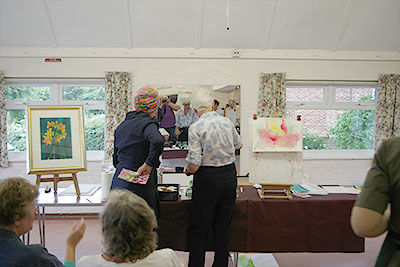
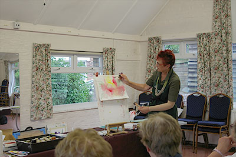

Contents:
- Winter Programme (September-April)
- Summer Programme (May-August)
- Demonstration Programme
- Our latest demonstration
- Our location
Winter Programme
Members meet every Wednesday in Ferring Village Hall, 9:30-11:30 A.M.
This year's Winter programme will appear here later in the year! See below for our Summer programme.
Summer Programme (May-August 2018)
Members meet in different locations every week to sketch and paint outside.
Wednesday mornings 9:30 A.M.-12:00 Noon.
| Date | Venue | Painting Ideas | Meeting/Parking |
|---|---|---|---|
| May 2nd | Tangmere Aviation Museum £7 | In or outdoor painting, Airplanes |
Post Code PO20 2ES Parking, restaurant and toilets |
| May 9th | Highdown Gardens | Chalkdown gardens | Car park and toilets. Opens at 10 am |
| May 16th | Freya’s Garden* | Private garden, dogs and ducks | 20 Foxley Lane, High Salvington, BN13 3AB |
| May 23rd | Swanbourne Lake | Lake, waterfowl, boats | Mill Road, Arundel, Tearooms, toilet |
| May 30th | West Burton House Permission to stay on |
House & magnificent garden. Downland views | West Burton Lane, off A29 Ignore ALL right-hand turns 0.8 miles, just beyond grass triangle entrance on left. Toilets |
| Jun 6th | Channel View gardens* | Pretty gardens, privately owned. | 52 Brookbarn Way, Goring-By-Sea, BN12 4DW Toilet |
| Jun 13th | Clapham Village | Cottages, Church views | Park in village or Church Car Park |
| Jun 20th | Look and Sea Centre, Littlehampton | River views, boats, people | 63-65 Surrey Str. BN17 5AW Café/restaurant, toilets, car park |
| Jun 27th | High Salvington Mill* £1 | Restored mill in field | On road parking, toilet |
| Jul 4th | Sea Lane/Ilex Way, Ferring | Trees, cottages, views | On road parking. Tearoom in village (Meeting committee members pm.) |
| Jul 11th | Allotment Gardens Worthing * | Sheds, pots, vegetables and flowers | On road parking and entrance at end of Ringmer Road. Toilets. Arrive at 9.30 promptly to be admitted. |
| Jul 18th | Patching Downs, Patching | Fine views along Long Furlong, church | Car Park at end of lane past church, footpath to Downs |
| Jul 25th | Steyning High Street and Church | Pretty cottages, church, shops, tearooms | Car park opposite church = phone operated, or on road parking |
| July 30th-August 5th | Annual Art Exhibition - Ferring Village Hall | ||
| Aug 7th (TUESDAY) | Amberley Village | Interesting cottages, gardens, pottery | On road parking near church, tearooms in square (11.30-5.30) |
| Aug 15th | Mill Farm Fisheries Bury – Stopham* |
Lakes, fishermen, views | Nth of Bury on A29, left B2138, directly left Bignor rd. Cp. 250 yards on left Post Code RH20 1HF |
| Aug 22nd | Bluebird Café/Rife | River or Sea views | Ferring, Car Park, toilets at cafe |
| Aug 29th | Lyminster Church | Church, Farmland views | Parking near church |
| Sep 5th | Back to Village Hall for Winter Programme | ||
| * Time booked outings with a strict 9:30 to 12:00 time slot. Other venues, feel free to take lunch and make it a day out, or meet up for tea/picnic together. |
|||
Demonstration Meetings
Art demonstration meetings are held on the third Saturday of every month at
Ferring Village Hall, 2.30-4:30 p.m.,
and visitors are welcome at these (£4 per meeting).
Demonstration Programme 2018/19
| 2018 | 2018 cont'd | ||
|---|---|---|---|
| May 19th | Catherine Barnes The way forward - finding a solution to your artwork problems | Sep 15th | Emma Jones Using Eli-Chem resin - demo and chance to try it out |
| June 16th | Lindsey Pearson Using Brusho - an interactive session | Oct 20th | Anne Chadwick Creating an interesting sky in acrylics |
| July 30th-August 5th | Exhibition of members work in Ferring Village Hall | Nov 17th | Marcus Finch A figurative session in acrylic or oil |
| 2019 | |||
| Jan 19th | Sharon Hurst A fantasy face concentrating on shaping, skin tones and glazing, in watercolour | ||
| Feb 16th | Paul Simmons An oil landscape | ||
| Mar 30th | Tony Parsons Portrait in oils | ||
| Apr 27th | AGM |
Our latest demonstration
Using Brusho – an interactive session with Lindsey Pearson
This demonstration faced a few early challenges. Network Rail closed the railway crossing and FIFA held the opening games in the World Cup. Despite this our valiant demonstrator made it through and a small and enthusiastic group of members and guests was treated to a very entertaining and informative afternoon.
Lindsey started off with an interactive warm-up session. Everyone had the chance to draw an item in pencil. The items included asparagus, pine cones and foliage. The only constraint was that you could not look at the pencil or paper at any time – only the item being drawn. After a couple of goes at the first item, everyone swapped to a different item. Lindsey explained that it was also a useful exercise to provide inspiration for new paintings and showed us some examples of work she had developed following this exercise.
Lindsey explained the advantages of Brusho, aka Earth Inks, as well as the pitfalls and dangers. Information sheets were handed out to back up her practical explanation of how to mix and store the medium. She the went on to demonstrate the initial stages of a painting including drawing in ink or brusho using wooden kebab sticks and wooden stirers from Costa Coffee (other brands are available).
During the break members were able to talk with Lindsey and inspect the materials in use, as well as the work completed.

After the break Lindsey continued to demonstrate various techniques including wet in wet, and developing a painting from an initial abstract pattern.

She then showed various examples of her completed work and talked through the many techniques used to develop them. Finally she asked for questions and judging by the number and range raised it was clear that the audience had remained thoroughly engaged throughout.
Lindsey has promised to visit our exhibition in August. It would be great if there are some works in Brusho included!
Click here to see some of our previous demonstrations!
Location of Ferring Village Hall
Address: Ferring Street, Ferring, West Sussex, BN12 5JP
Map:
Click here to see this on Google Maps!